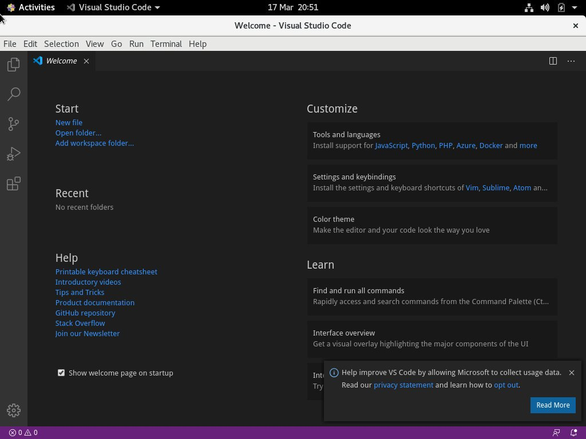

在 CentOS 8 上 VS Code 安装教程
•
约 500 字
, 预计阅读时间 3 分钟
VS Code 是 Microsoft 开发的一种开源，跨平台代码编辑器。它内置了的调试功能，也内置了 Git 版本控制，同时支持语法突出显示，代码完成，集成终端，代码重构和代码片段等功能。
本文介绍如何在 CentOS 8 上安装 VS Code 。
先决条件
您以具有 sudo 特权的用户身份登录。
在 CentOS 上安装 VS Code
在 CentOS 8 系统上安装 VS Code 的最简单和推荐的方法是启用 VS Code 存储库并通过命令行安装 VS Code 软件包：
-
导入 Microsoft GPG 密钥：
sudo rpm --import https://packages.microsoft.com/keys/microsoft.asc -
打开文本编辑器并创建存储库文件：
sudo nano /etc/yum.repos.d/vscode.repo粘贴以下内容到文件
/etc/yum.repos.d/vscode.repo以启用 VS Code 存储库：[code] name=VS Code baseurl=https://packages.microsoft.com/yumrepos/vscode enabled=1 gpgcheck=1 gpgkey=https://packages.microsoft.com/keys/microsoft.asc保存文件并关闭您的文本编辑器。
-
通过键入以下命令安装最新版本的 VS Code ：
sudo dnf install code
现在， VS Code 已安装在 CentOS 桌面上，您可以开始使用它。
启动 Visual Studio 代码
现在在您的 CentOS 系统上已经安装了 VS Code ，您可以在命令行中键入 code 或单击 VS Code 图标 (Applications -> Programming -> VS Code) 来启动它。
首次启动 VS Code 时，将出现如下所示的窗口：

现在，您可以根据自己的喜好开始安装扩展并配置 VS Code 。
更新 Visual Studio 代码
发行新版本时，您可以通过桌面标准软件更新工具或在终端中运行以下命令来更新 Visual Studio 代码包：
sudo dnf update
结论
您已在 Ubuntu 18.04 计算机上成功安装了 VS Code 。下一步可能是安装其他组件并自定义用户和工作区设置。
要了解有关 VS Code 的更多信息，请访问其官方文档页面。